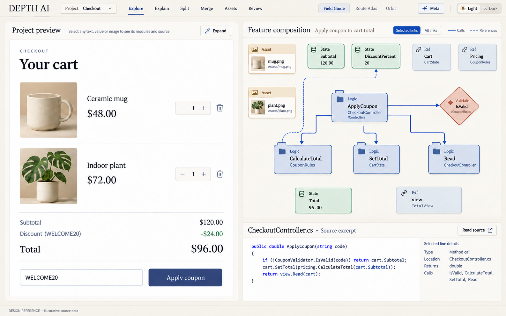01큰 프리뷰와 전체 모듈 구성The large preview is the starting point; all constituent modules stay visible.
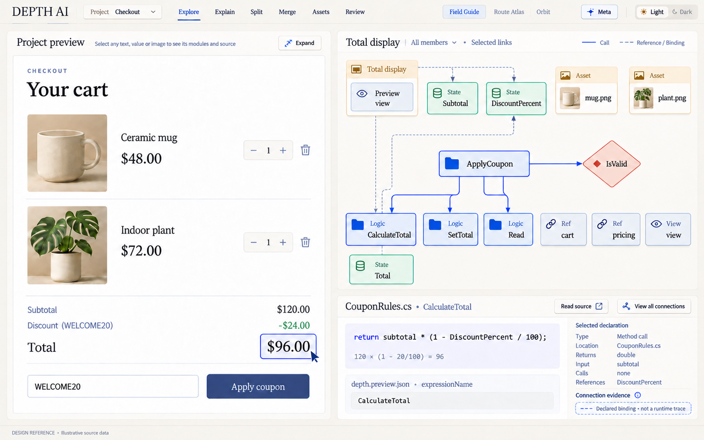02총액 클릭 → 계산 코드와 전체 구성Selected total exposes calculation, state and complete source composition.
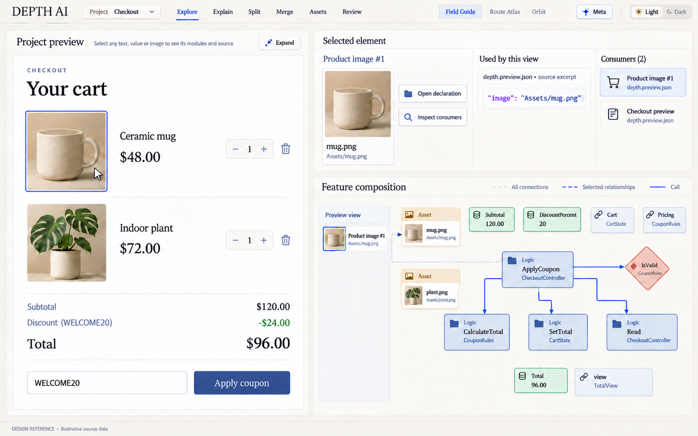03이미지 클릭 → 에셋·사용처·소스Asset use is connected to view declarations and feature code; images are not isolated.
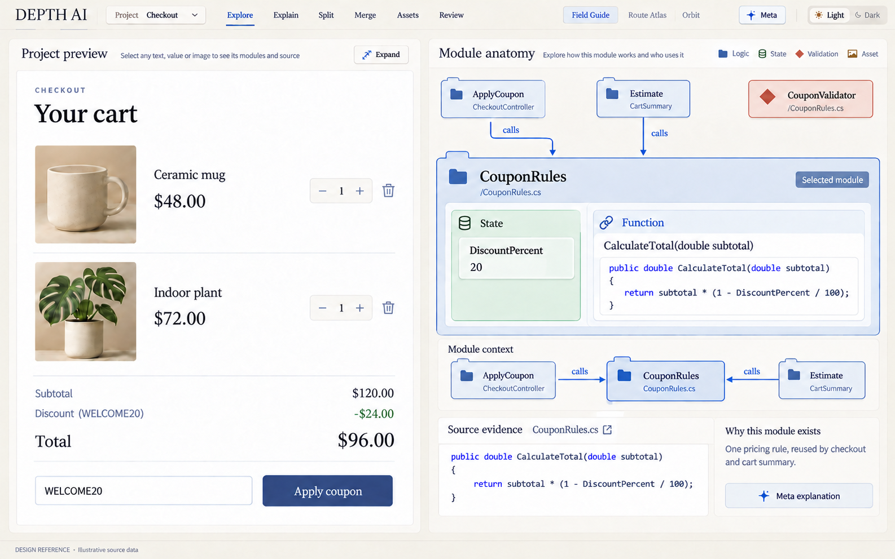05모듈 내부와 공유 구현Open a module to see all its members and real source, preserving surrounding context.
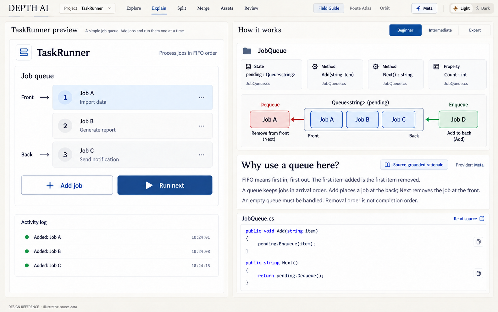06초보자 설명 — Queue와 FIFOLonger source-grounded learning explanation plus a concrete interactive FIFO example.
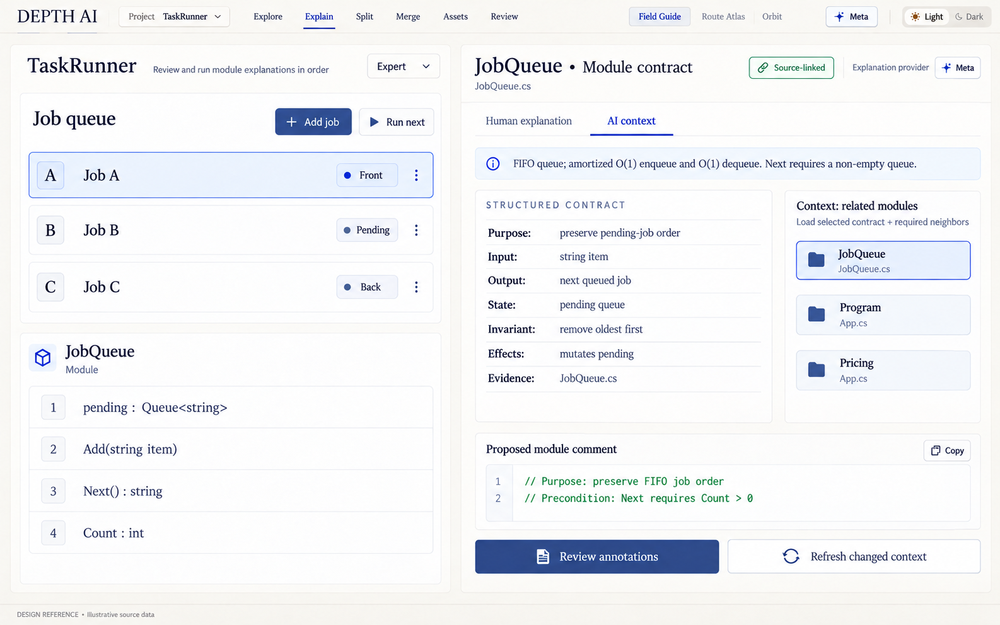07숙련자 설명과 AI용 모듈 계약·코멘트Concise expert rationale and structured reusable AI context, source citations and local comments.
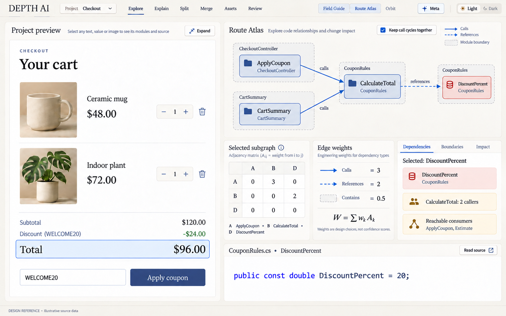08가중 관계·모듈 경계·변경 영향Typed weighted dependency graph, matrix and structural importance rather than arbitrary A–B lines.
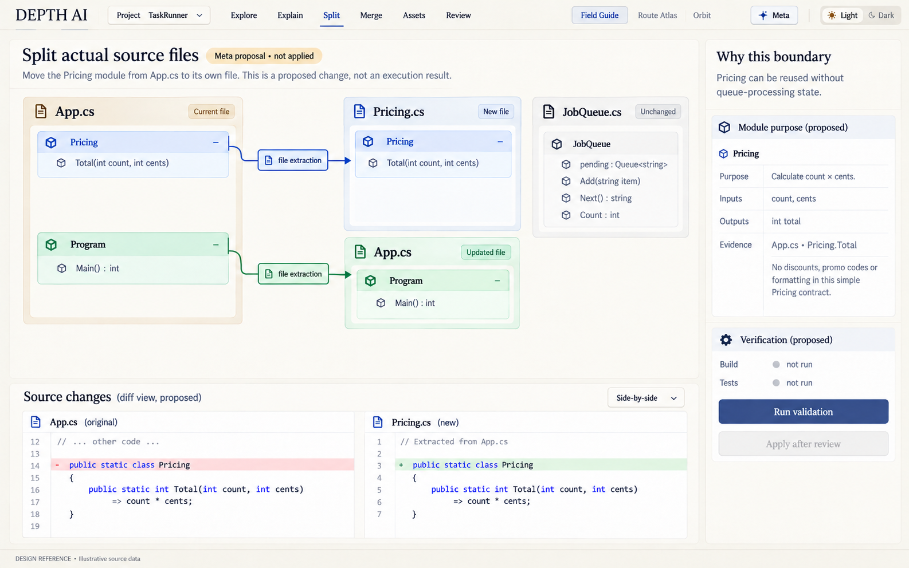09Meta 제안으로 실제 소스 파일 분리Visible module partition maps to actual file edits, reviewable diff and required validation.
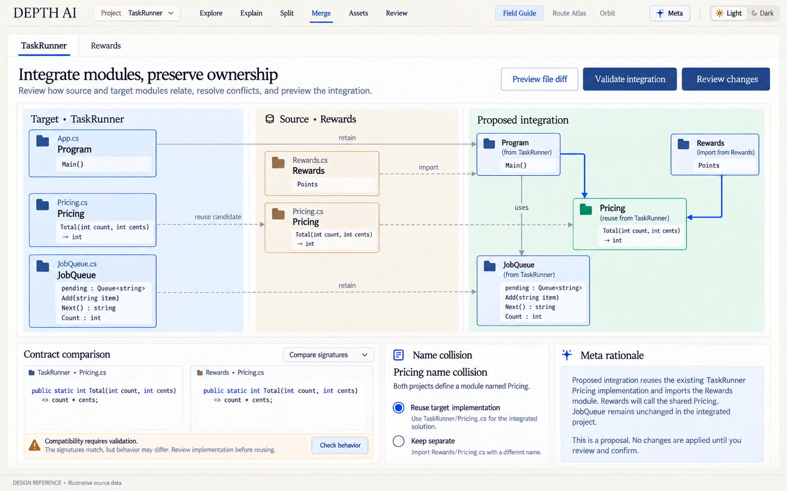10두 프로젝트의 모듈 단위 통합Compare source and target modules, reuse shared implementation and inspect contract conflicts.
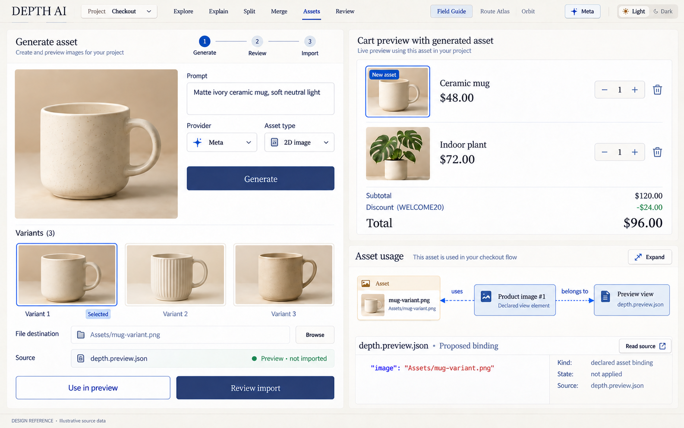11Meta 2D 이미지 제작과 사용처 연결Generate a consistent image asset, preview it in context, review and import with source usage links.
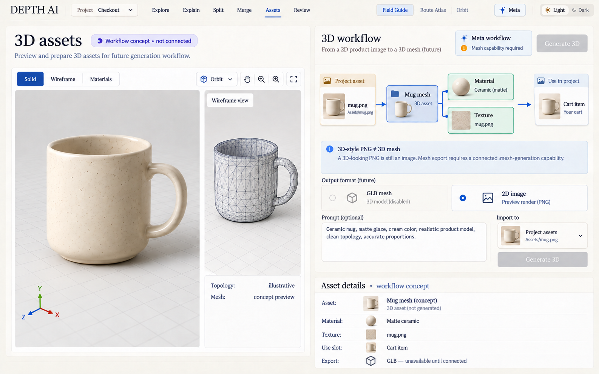123D 에셋 작업 흐름 — 목표 설계Honest concept for real mesh inspection; a 3D-style PNG is not mislabeled as a GLB.3D 스타일 PNG와 실제 메시를 구분한 목표 화면입니다.
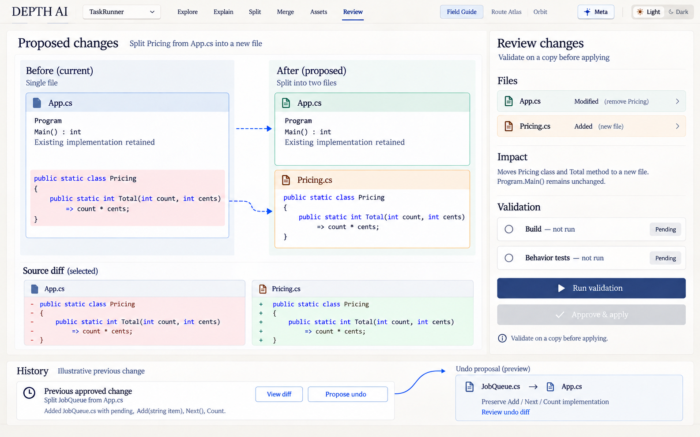13변경 검토·검증·승인·되돌리기Review structural and source changes, validation state and persistent reversible history.
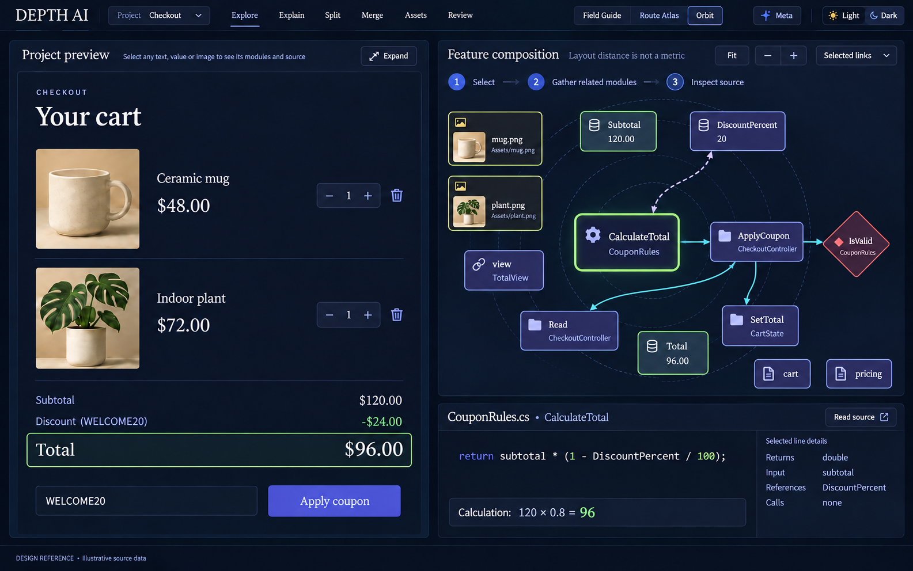14다크 모드 — 큰 프리뷰와 방사형 구성Dark theme and Orbit arrangement preserve the same preview, source IDs and full feature context.